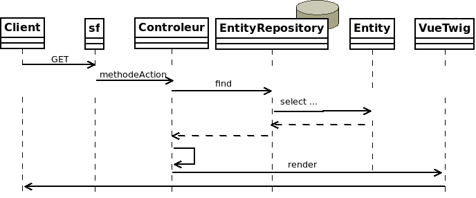

Présentation

Symfony est une solution créée par la société Sensiolabs qui en assure l’évolution, assitée par de nombreux contributeurs.
Symfony est un ensemble de Composants PHP, un framework pour les Applications Web, une Philosophie, et une Communauté — tous travaillant ensemble, en harmonie.
Qu'est-ce que Symfony ? par Sensiolabs - a french company
Cette introduction se base sur les ressources documentaires de Symfony (version 4), afin d’en faciliter le premier accès à des étudiants développeurs ayant eu un premier contact avec le développement web.
Pour réaliser les travaux pratiques, vous aurez besoin d’aller plus en profondeur sur la connaissance des composants. La documentation Symfony est accessible ici : https://symfony.com/doc/current/index.html
Introduction au Model
Éléments d’architecture
Nous avons vu comment associer des routes à des contrôleurs (méthodes d’action d’une classe Controller).
Nous allons voir comment le contrôleur peut s’appuyer sur des objets métier pour implémenter une logique de cas d’utilisation.
| Il est courant de faire porter la responsabilité d’un cas d’utilisation à une classe contrôleur. |
Il existe 2 sortes d’objets métier : Entity et EntityRepository.
-
Entity: Représente une classe métier pour le domaine étudié (Client,Contrat, …). -
EntityRepository: Est responsable de la communication avec le système de persistance, notamment en lien avec l'ORM.
Le contrôleur dépend de Entity et EntityRepository, Entity ne dépend pas d’un ORM, EntityRepository si.

Premiers pas avec le model
Guide
Faire le lien entre un objet (instance d’une classe Entity) et une ligne d’une table d’une base de données est une opération complexe (synchronisation, mise en cache, cohérence de type, …).
Les ORMs (object-relational mapping) sont des logiciels qui effectuent le lien entre objet métier et ligne de table d’une base de données. Par défaut, symfony utilise la solution doctrine.
Tutoriel doctrine de symfony
Doctrine peut être mise en oeuvre sans Symfony, mais nous vous invitons néanmoins à
étudier le tutoriel Doctrine avec Symfony, car ce dernier en simplifie l’accès.
Ce tutoriel vous montre comment lier une classe métier à une table d’une base de données, et donc une instance (un objet) à une ligne (occurrence d’une table), et les opérations CRUD associées.
Tutoriel à suivre : Introduction à Doctrine avec Symfony - Durée estimée : 2H (étude, configuration, codage des exemples et tests)
Au menu :
-
Entity et Table liée
-
Liaison Attribut - Colonne (field - column)
-
Migration modèle objet ←→ schéma de la base de données
-
Opérations CRUD
À l'issue de ce tutoriel (~2H), vous réaliserez les travaux suivants :
Travaux pratiques
Durée moyenne : 8H
-
Tester vos connaissances sur http://quizbe.org/ (créer un compte et lier-le à votre classe SIO22-LDV-2018-19)
-
Ajouter, sur la plateforme quizbe, une nouvelle question QCM sur le thème du Model avec Symfony
| Bonus de 1 point (sur un des contrôles) si proposition originale, juste et pertinente. |
-
À partir de l’exemple étudié dans le tutoriel de Symfony sur la notion de
Model(classeProduct), réalisez les opérations permettant à un utilisateur lambda de :-
Lister les produits
-
Création d’un produit
-
Modifier un produit
-
Supprimer un produit
-
Dans les vues twig, vos liens seront basés sur le nom des routes et non sur les routes elles-mêmes.
Ces noms sont consultatbles en ligne de commande : php bin/console debug:router. Voir aussi https://symfony.com/doc/current/templating.html#linking-to-pages
|